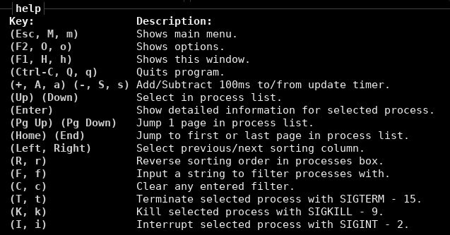

Bashtop es un proyecto con licencia Apache 2.0 desarrollado por aristocratos, que nos permite acceder a toda la información de nuestra cpu, memoria, almacenamiento, red, procesos… de nuestro pc, servidor,… de un modo claro, desde mi punto de vista, de lo que lo haríamos con top o htop.

Me ha gustado mucho porque puedo ver el consumo en ram, cpu,… en tiempo real y de un modo gráfico y claro de mis dockers.
También el uso es mucho más intuitivo, seleccionando los procesos mediante las teclas arriba, abajo. Para seleccionar el proceso deseado, pulsaremos Enter y se abrirá una pequeña sección donde muestra estadísticas detalladas para el proceso seleccionado.
Permite la posibilidad de filtrar procesos, pulsando la tecla f y escribiendo el nombre del proceso, entre otras muchas más cosas.

También, igual que sucede con htop, podemos matar procesos. Nos pondremos sobre el proceso que queremos matar y pulsaremos la k. Antes de detener ese proceso, bashtop nos preguntará si así queremos hacerlo.
Para su uso se recomienda bash v4.4 o posterior.
Vamos a ver como instalarlo y utilizarlo
Clonamos el repositorio desde la raíz del HOME.
cd ; git clone https://github.com/aristocratos/bashtop.git
Crear alias. Recuerda sustituir el usuario angel por el tuyo.
alias bashtop='/home/angel/bashtop/bashtop'
Ahora, cada vez que escriba en la terminal bashtop, será lanzado.
La primera vez que ejecutemos bashtop, nos creará un archivo de configuración en la siguiente ruta: $HOME/.config/bashtop/bashtop.cfg.
En este archivo podremos configurar el tiempo de refresco en milisegundos, el orden de los procesos, habilitar la temperatura de la cpu,… y más cosas que podremos encontrar en la documentación del repositorio del desarrollador.
Podremos ver y editar de un modo gráfico está configuración, pulsando dentro de bashtop la tecla ESC y seleccionando OPTIONS.
Para conocer un poco más las opciones de esta aplicación, pulsaremos la tecla h para acceder a la ayuda.

Las imágenes son del repositorio del desarrollador
Yo no se vosotros, pero yo he forkeado este magnífico proyecto.

Publicado por Angel el Tuesday 07 April del 2020
También te puede interesar:
Powered by org-bash-blog
Writing in orgmode whith emacs

Este obra está bajo una licencia de Creative Commons Reconocimiento-NoComercial-CompartirIgual 4.0 Internacional.